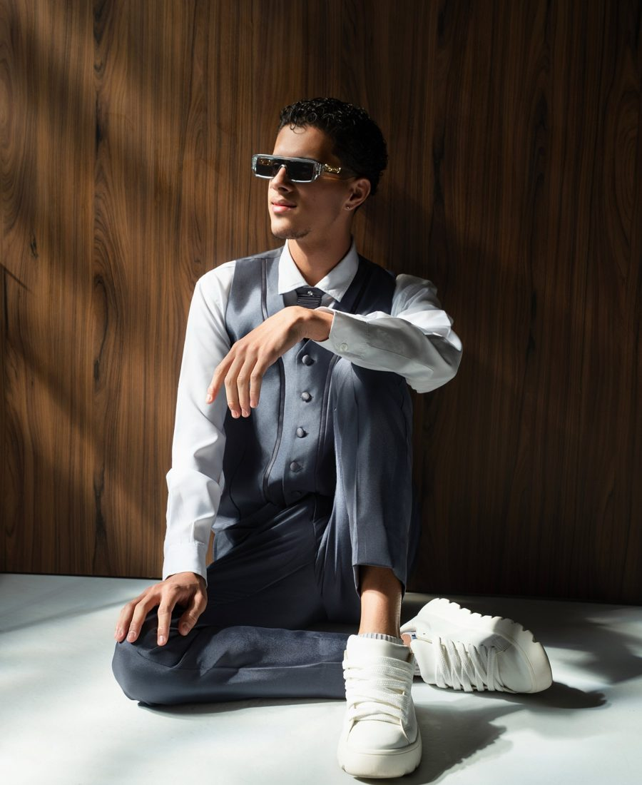

Storymaker
& Videomaker
Eu cubro seu evento em tempo real e crio vídeos editados com narrativa, para eventos, clínicas, marcas e criadores.

Ao vivo ou
editado
Storymaker
Acompanho o evento e registro os melhores momentos enquanto tudo acontece: Stories verticais, bastidores e detalhes. A publicação em tempo real depende da conexão do local e do formato combinado.
Videomaker Mobile
Reels, aftermovies e vídeos planejados, captados e editados com ritmo e narrativa próprios, indo além de juntar gravações.
Trabalhos
Sobre
Tenho 18 anos, moro em Belo Horizonte e trabalho como Storymaker e Videomaker Mobile.
Desde pequeno gosto de mexer com vídeo. Eu gravava e publicava muito antes de isso virar profissão, e esse gosto só cresceu.
Hoje trabalho em uma empresa de marketing, a Launx / Smart Leilões, e levo esse olhar para cada evento, bastidor e vídeo que produzo.
Do convite
à entrega
Conversa
Você me conta o evento ou o projeto e eu monto o orçamento sob medida, com entregas e condições claras.
Produção
Eu registro o evento ou gravo o projeto, com atenção aos detalhes e aos momentos que importam.
Entrega
Edito e entrego o material como combinamos.